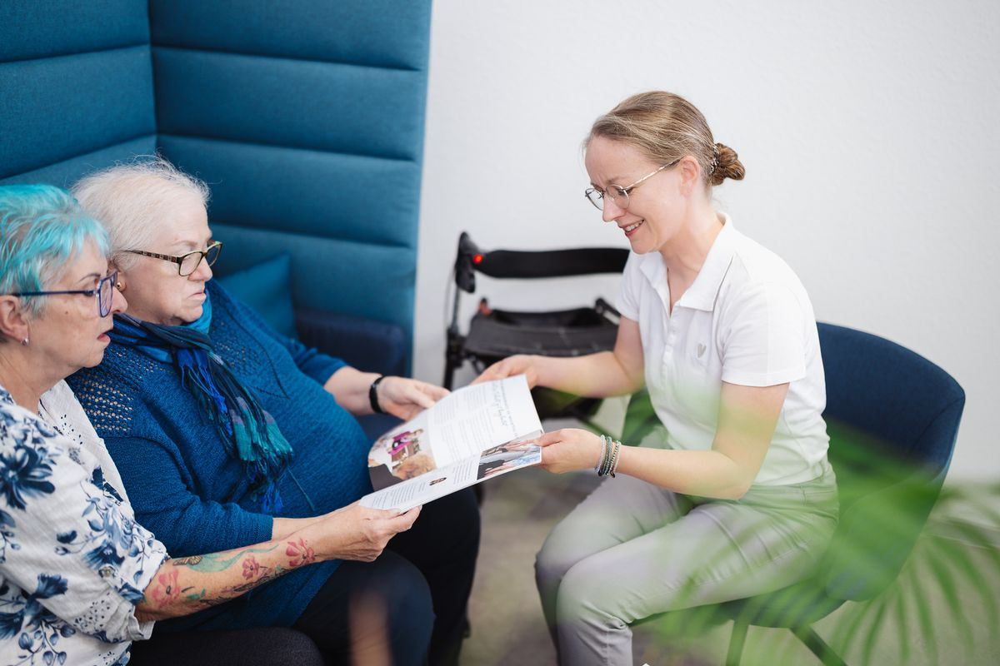

Wie können wir helfen?
Die Pflegeberatung ist für Sie kostenlos. Auf Wunsch kommen wir zu Ihnen nach Hause.
Ihre PflegeberaterinnenMechthild Höckesfeld und Frau Olejnik
Die Pflegeberatung …
- findet mit Ihnen Lösungen, den Pflegealltag leichter zu machen, und entlastet pflegende Angehörige.
- informiert über Hilfen und was die Pflegekasse bezahlt.
- berät schon vor der Entlassung aus dem Krankenhaus: Was wird zu Hause gebraucht?
- berät vor dem Gutachten zum Pflegegrad.
- zeigt zu Hause, wie man Pflegesituationen meistert, zum Beispiel bei Demenz, Lagerung oder Hilfsmitteln.
- berät zu anderen Wohnformen: Senioren-WG und Service-Wohnen.
Beratungsbesuch nach § 37.3 SGB XI
Wer schon einen Pflegegrad hat, bekommt zweimal im Jahr eine ausführliche Beratung zu Hause. Die Kosten tragen die Pflegekassen. Antworten gibt es zum Beispiel auf diese Fragen: Passt der Pflegegrad noch? Braucht es Hilfsmittel wie einen Rollator? Wie gelingt Heben und Lagern rückenschonend? Welche Kurse helfen weiter?
